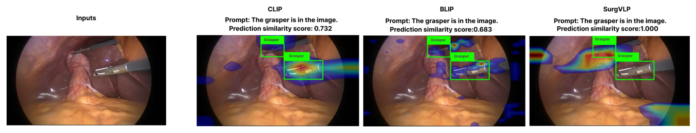
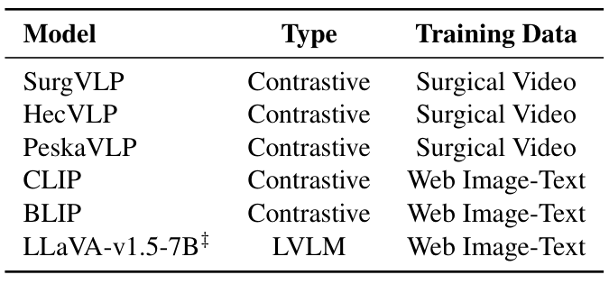
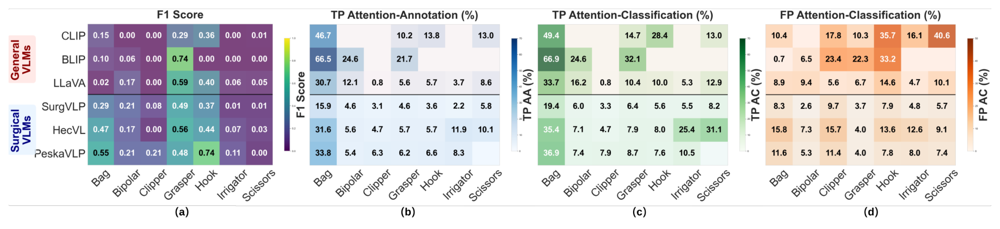
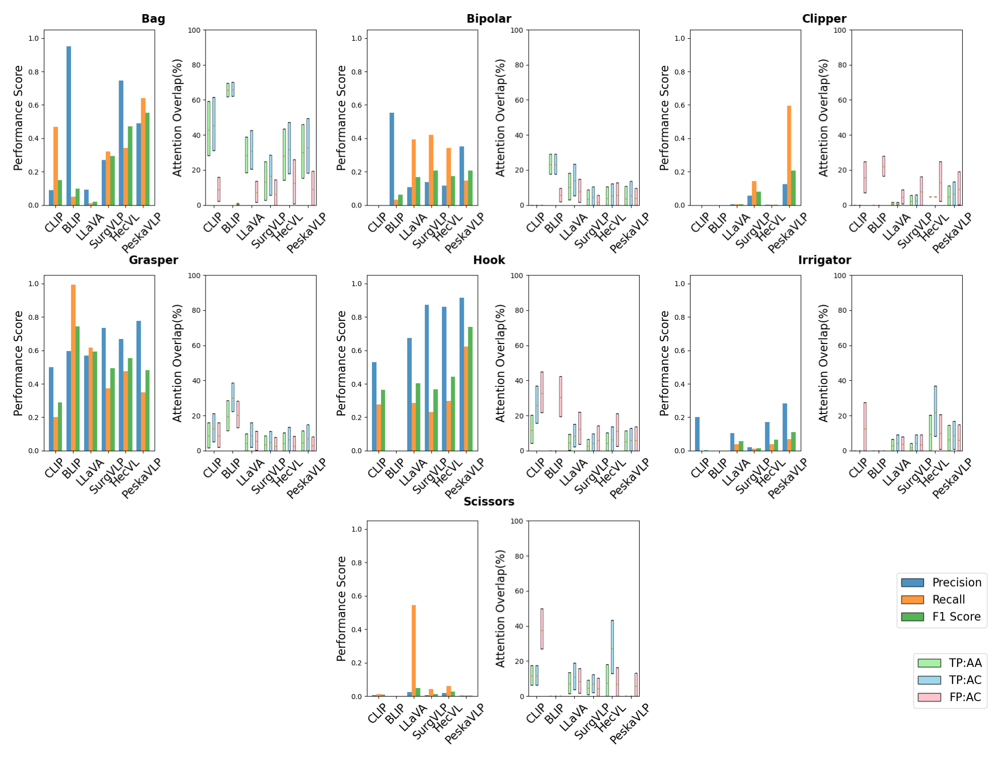
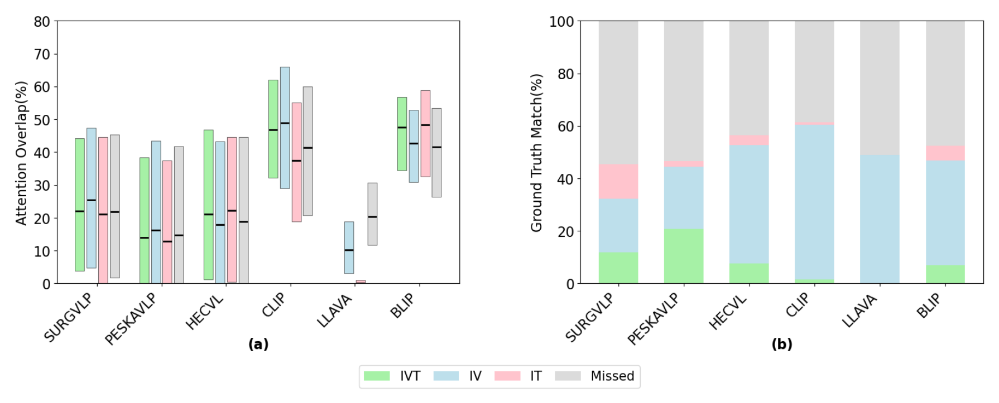
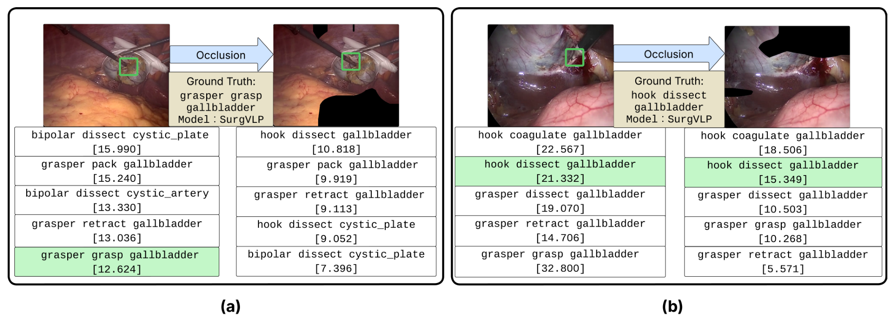
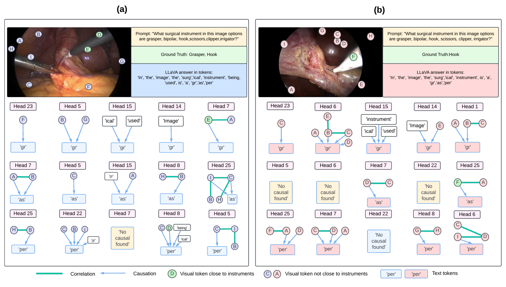

图文解读
1背景与动机
手术视觉语言模型的准确率已经被评测过,但没人检查它答对时看的是不是器械本身。 此前唯一的手术基准由 Rau 等人完成,结论是手术模型表现差,器械识别精度在零样本和 5 样本下都低于 60%,但它只报告标准指标。
作者把问题拆成两组:答对时注意力是否落在临床相关区域(A-i),是否存在没看对区域却答对的巧合(A-ii);答错时是看错了区域(B-i),还是看对了却认不出(B-ii)。

2核心观点速览
论文的做法是在标准指标旁边,再量一量模型答对时注意力落在哪里。
- 指标:AA、AC 衡量前 20% 注意力像素落在器械框内的比例;RAS 把运动区域也算进参考区域。
- 数据:不采集新数据,用 Cholec80BBox 的 5 个视频和 CholecT45 的两个带框视频。
- 结果:PeskaVLP 电钩 F1 0.7410,TP_AA 只有 6.6%;遮挡 SurgVLP 高注意力区域后 28.2% 的帧失去正确三元组。
边界:没有框面积的随机基线,没有随机遮挡对照,热图方法随主干不同。
3数据与任务
两个数据集都来自胆囊切除术。Cholec80BBox 有 5 个视频、51.7K 帧和器械框,用于七类器械分类;CholecT45 有 45 个视频、90.5K 帧和帧级三元组,但只有 VID42、VID43 带框,所以三元组评测只用这两个视频。

本文没有发布新数据。 新增的只有光流自动生成的运动掩码,仓库给的是生成脚本而不是掩码文件。
下一节看三个指标怎么算。
4指标与交互区域
对比模型的相似度超过第 90 百分位即算预测,三元组取前 5。热图取最高的 20% 像素,论文设 τ=0.8:
$$AA=\frac{|\mathcal{A}_\tau\cap\mathcal{G}_{\hat c}|}{|\mathcal{A}_\tau|},\qquad AC=\frac{|\mathcal{A}_\tau\cap\mathcal{G}_{all}|}{|\mathcal{A}_\tau|}$$
动作发生在器械与组织接触处,单靠器械框不够。作者用 RAFT 光流估计相邻帧运动,减去相机平移、俯仰、缩放、旋转的拟合流,再取阈值 γ=0.8 得到运动掩码。
建议位置：指标与交互区域
放置原因：它是 RAS 指标参考区域的来源。
当前状态：保留占位；自动视觉质量检查拒绝了该裁剪。
运动掩码没有人工核验,它是否真对应交互区域,论文未说明。
5器械分类:准确与对位的背离

| 模型 | 标本袋 F1 | 标本袋 TP_AC | 电钩 F1 | 电钩 TP_AA |
|---|---|---|---|---|
| BLIP | 0.10 | 66.9 | 0.00 | 无真阳性 |
| PeskaVLP | 0.55 | 36.9 | 0.74 | 6.6 |
手术模型 F1 更高,注意力对齐更低。 作者据此回答 A-i 与 B-ii。但抓钳一列例外:BLIP 抓钳 F1 0.74 最高,图 7 显示它召回接近 1.0、精度约 0.6,更像几乎每帧都预测抓钳。

正文写 PeskaVLP 双极电凝 F1 为 0.7899、冲洗器为 0.7962,图中对应格子是 0.21 和 0.11,只有电钩一致。
6三元组与遮挡

CLIP 的器械-动作匹配 59.1%,三项全对只有 1.4%;LLaVA 分别是 48.9% 和 0.0%。PeskaVLP 三项全对 20.8% 领先。通用模型能猜器械和动作,答不对目标组织。

遮挡 SurgVLP 高注意力区域后,28.2% 原本完全匹配的帧失去匹配,剩余匹配的相似度平均降 9.87。论文未说明同面积随机遮挡的对照结果,所以这还不能和"任意涂黑都扰乱预测"区分。
7LLaVA 的因果图

注意力法下六个子词词元的文本占比都在 0.913 以上;CLEANN 下只有 cutting 文本主导(77.6%),其余五个视觉主导。附录说两种方法都检测到文本依赖,表中数字不支持。
8深入分析
- 框面积:标本袋框大,各模型 TP_AC 最低也有 19.4%;各类框面积比例论文未说明,无法给出随机基线。
- 热图方法:手术模型都是残差网络主干,用梯度热图;CLIP 是视觉变换器,用注意力回传。对齐差有多少来自方法差异,论文未分开。
- 样本:三元组只来自两台手术,单次运行,没有置信区间。